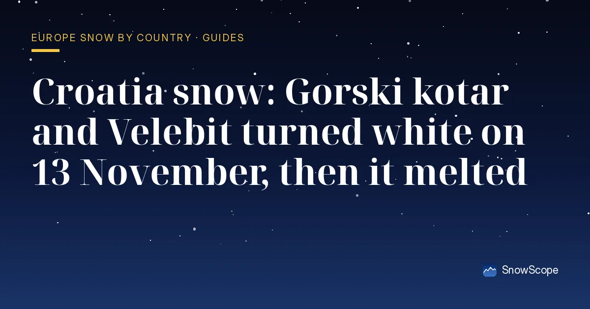
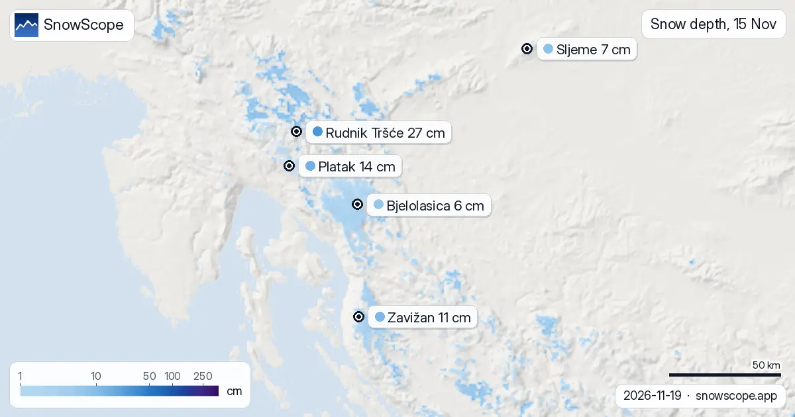

Snijeg u Hrvatskoj: Gorski kotar i Velebit pobijeljeli 13. studenoga, a zatim se otopilo
Hrvatske planine prošli su tjedan kratko, ali stvarno okusile zimu. U petak 13. studenoga na gornje staze sjevernog Velebita palo je oko 30 cm snijega, na Bjelolasicu 29 cm, a na Platak i Risnjak po 19 cm. Četiri dana kasnije sve se otopilo: u četvrtak 19. studenoga nijedno hrvatsko skijalište ni skijaška planina nema snijega na tlu. Evo kako je prošao tjedan, što su izmjerile meteorološke postaje i kada stiže sljedeći snijeg.
Pogledajte prognozu snijega za Croatia u aplikaciji SnowScopeVisina snijega, upozorenja i 3D karta, besplatno.
Petak 13. studenoga: jedan dan snijega
Gotovo sav snijeg ovog tjedna pao je u jednom danu, duž visokih grebena između Rijeke i Like. Zavižan, na vrhu sjevernog Velebita (1676 m), dobio je oko 30 cm na gornjim padinama. Bjelolasica, staro skijalište Gorskog kotara na 1534 m, dobila je 29 cm. Platak iznad Rijeke i susjedni Risnjak dobili su po oko 19 cm.
U unutrašnjosti je palo mnogo manje. Sljeme iznad Zagreba dobilo je tek oko 3 cm, a brda Hrvatskog zagorja ostala su zelena. Svježi snijeg se uvijek slegne, pa visina na tlu nikad nije dosegla količinu koja je pala: na Velebitu je od 30 cm novog snijega u dva dana ostalo 10 do 11 cm pokrivača.

Što su izmjerile postaje
Postaja Zavižan, na 1597 m na sjevernom Velebitu, najviša je u Hrvatskoj. Imala je 16 cm snijega u subotu 14. i u nedjelju 15. studenoga, 5 cm u ponedjeljak 16. studenoga, a u utorak 17. studenoga tlo je bilo kopno. U Gorskom kotaru postaja Parg (863 m) kraj Čabra imala je 8 cm u subotu ujutro, 2 cm u nedjelju i ništa u ponedjeljak. Gospić u Lici, na 565 m, u subotu je osvanuo pod 2 cm, koji su do sljedećeg jutra nestali.
Na Medvednici je postaja Puntijarka (988 m), ispod Sljemena, svako jutro u tjednu bilježila kopno. U Zagrebu snijeg uopće nije ležao.
Skijališta, dan po dan
Na gornjim stazama snijeg se zadržao tri do četiri dana. Rudnik Tršće, malo skijalište kraj Čabra sa žičarama do 1019 m, imao je najdeblji pokrivač u zemlji: 29 cm u subotu 14. studenoga, 27 cm u nedjelju i 17 cm u ponedjeljak, a u utorak ništa. Platak, s gornjom stanicom na 1354 m, imao je 9 cm u subotu, 14 cm u nedjelju i 10 cm u ponedjeljak, a do utorka je ostao bez snijega.
Bjelolasica je snijeg zadržala najdulje, s 12 cm na gornjim padinama u ponedjeljak 16. studenoga. Na Zavižanu je vrhunac bio 11 cm u nedjelju. Od srijede 18. studenoga sve su lokacije bez snijega, a danas, u četvrtak 19. studenoga, suh je dan bez novog snijega u hrvatskim planinama.
Je li zelen sredina studenoga normalna?
Jest. Na srednjoj postaji Platka, oko 1220 m, kopno 19. studenoga uobičajena je slika: u proteklim zimama tlo je tamo na taj datum bilo bijelo u samo 34% godina. Na Sljemenu, na 882 m, bijelo je bilo u samo 11% godina. Skijanje u Hrvatskoj obično počinje kad prosinac donese hladniji zrak i kad skijališta mogu dodati vlastiti snijeg, pa otapanje nakon jednog ranog snijega nije ništa neobično.
Prošli tjedan ipak je pokazao koliko brzo visoki dijelovi Gorskog kotara i Velebita pobijele kad hladno sjeverno strujanje susretne vlažan jadranski zrak. Upravo takvu situaciju skijaši čekaju.
Kada se snijeg vraća?
Ne prije početka sljedećeg tjedna. Petak 20., subota 21. i nedjelja 22. studenoga uglavnom su suhi, s najviše 3 cm na Platku u nedjelju u najvišoj prognozi. Sljedeća prava prilika je ponedjeljak 23. studenoga: Bjelolasica dobiva 2 do 9 cm na gornjim padinama, srednja prognoza 7 cm; Zavižan 2 do 5 cm, srednje 4 cm; Platak 0 do 8 cm, srednje 2 cm.
Još jedan slab val moguć je u četvrtak 26. studenoga, do 6 ili 7 cm u najvišim prognozama za Platak, Zavižan i Bjelolasicu, ali srednja prognoza ostaje suha. Za cijeli tjedan od 20. do 26. studenoga to je oko 7 cm za Bjelolasicu (2 do 16 cm), 4 cm za Zavižan (2 do 11 cm), 3 cm za Platak (0 do 17 cm) i gotovo ništa za Sljeme (0 do 4 cm).
Preko granice
Ako vam snijeg treba ovaj vikend, gledajte prema sjeverozapadu. Visoke slovenske planine danas su ponovno bijele: gornje staze Kanina imaju 28 cm, a Kranjska Gora 20 cm. Bosna i Hercegovina je u istoj situaciji kao Hrvatska: sada bez snijega, sa snijegom u prognozi krajem sljedećeg tjedna.
Za samu Hrvatsku najbolje je pratiti prognozu za ponedjeljak 23. studenoga i prije puta provjeriti službene kanale Platka: nekoliko centimetara na travi nije dovoljno za pokretanje žičare.
Savjeti za skijaše
- Snijeg na Velebitu i u Gorskom kotaru otopio se za četiri dana: ne planirajte skijanje prema slikama s prošlog vikenda.
- Sljedeća prilika za snijeg: ponedjeljak 23. studenoga, nekoliko centimetara na Bjelolasici, Zavižanu i Platku.
- Prije polaska provjerite službene kanale skijališta.
More maps (external sites)
About these numbers
Snijeg na stazama: gornje staze svakog skijališta na dnevnoj karti snijega SnowScopea. Izmjereni snijeg: meteorološke postaje, očitanje u 7 sati po lokalnom vremenu. Snijeg koji dolazi: najniža, srednja i najviša prognoza za gornju stanicu svakog skijališta.
Cite this report
For research, teaching or the press: the numbers and charts are free to reuse under CC BY 4.0 with this citation.
SnowScope (2026), Snijeg u Hrvatskoj: Gorski kotar i Velebit pobijeljeli 13. studenoga, a zatim se otopilo, https://snowscope.app/blog/hr/2026/11/croatia-snow-gorski-kotar-velebit-13-19-november-2026.html, accessed 2026-11-19
SnowScope (Atlas Labs). (2026, November 19). Snijeg u Hrvatskoj: Gorski kotar i Velebit pobijeljeli 13. studenoga, a zatim se otopilo. SnowScope snow reports. https://snowscope.app/blog/hr/2026/11/croatia-snow-gorski-kotar-velebit-13-19-november-2026.html
BibTeX
@misc{snowscope2026croatiasnowgorskikotarve,
author = {{SnowScope (Atlas Labs)}},
title = {Snijeg u Hrvatskoj: Gorski kotar i Velebit pobijeljeli 13. studenoga, a zatim se otopilo},
year = {2026},
month = nov,
howpublished = {\url{https://snowscope.app/blog/hr/2026/11/croatia-snow-gorski-kotar-velebit-13-19-november-2026.html}},
note = {Published 2026-11-19 16:39 UTC; accessed 2026-11-19}
}· CC BY 4.0 · Methods, data and tools →
Follow Croatia
Besplatno: poruka kada dolazi novi snijeg i prognoza svako jutro.